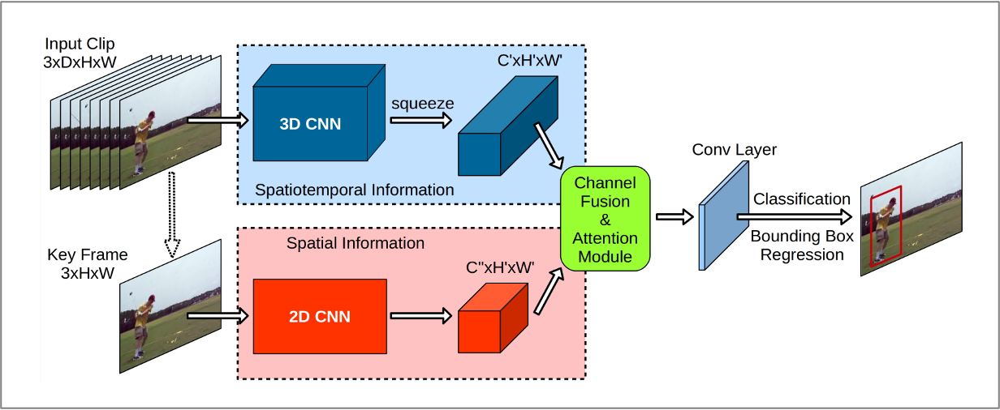
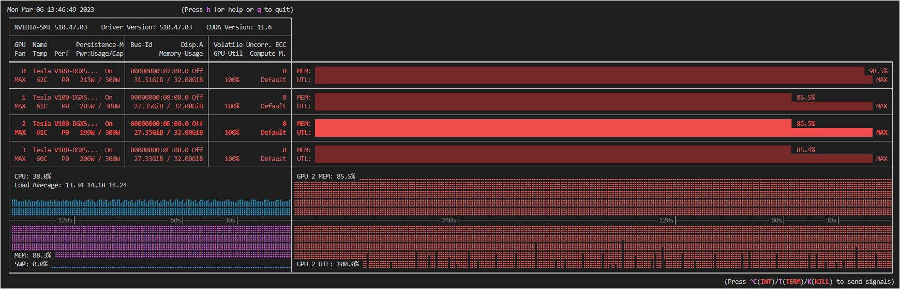
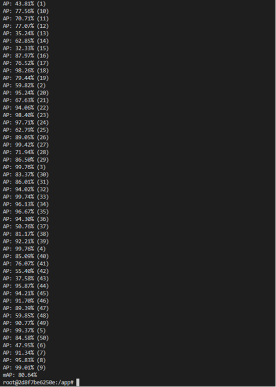
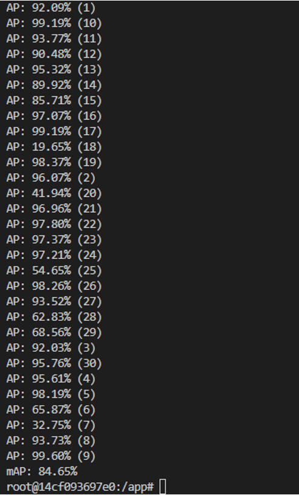

Before a public dataset goes out on AI-HUB, someone has to verify it's actually learnable. This project validated a 2-/3-person action classification dataset by training YOWO (You Only Watch Once) models on it and confirming the labels held up.
I trained on a 1.2TB video dataset across 8 GPUs (4× A100, 4× V100) using PyTorch DistributedDataParallel so every GPU stayed fully utilized instead of idling between batches, reaching mAP of 80.64% for 2-person actions and 84.65% for 3-person actions, then Dockerized the inference pipeline for official TTA validation.

YOWO — a 3D CNN reads spatiotemporal motion across the input clip while a 2D CNN reads spatial detail from the key frame, fused into a single classification + bounding box output
All 4 GPUs (of 8 total, across 2 nodes) pinned at 100% utilization under DistributedDataParallel, no idle time waiting on a lagging workerOn a 1.2TB dataset, a single slow data-loading or gradient-sync step compounds fast across epochs. Getting DDP configured so all 8 GPUs stayed saturated, rather than bottlenecking on one, was what made training at this scale actually finish in a reasonable time.

2-person actions — per-class AP across 50 classes, mAP 80.64%
3-person actions — per-class AP across 30 classes, mAP 84.65%